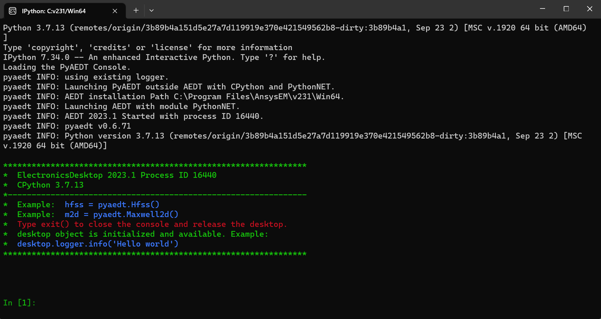
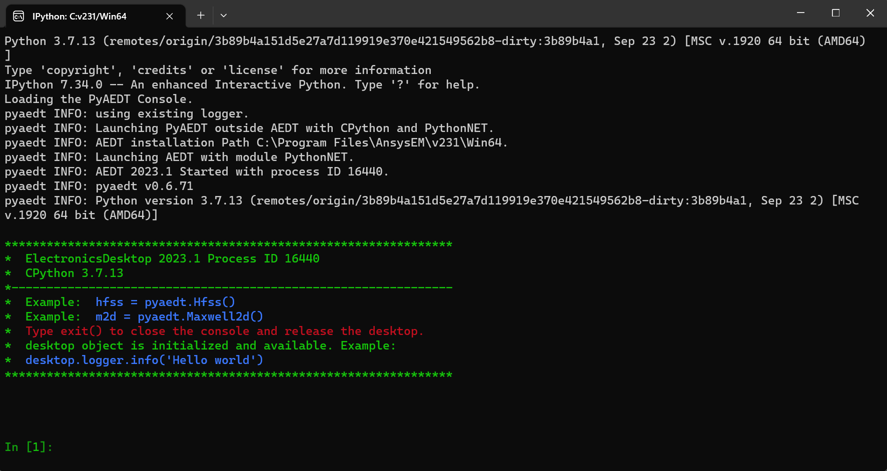

Getting started#
To run this toolkit, you must have a licensed copy of Ansys Electronics Desktop (AEDT) installed.
The toolkit could be launched from:
AEDT, see How to install inside AEDT and run the UI.
From a python console, see How to install in the console and run the UI or How to install in the console and use the API
The toolkit features can be accessed from:
The user interface (Antenna Wizard), see UI reference.
The API, see API reference.
How to install inside AEDT and run the UI#
This section shows how to install the toolkit inside the Ansys Electronics Desktop (AEDT) using the base interpreter from AEDT installation.
The toolkit can be installed inside AEDT using PyAEDT.
Download and run the install script from the PyAEDT documentation. Note AEDT must be restarted to update the Tools menu if this is the first time a Toolkit has been installed in AEDT.
Open the console:
 

{kind=link}
Run the PyAEDT command: add custom toolkit method:
desktop.add_custom_toolkit("AntennaWizard")
exit()
Open the toolkit. If the toolkit does not appear, please restart AEDT:
{kind=link}
Click on Antenna Wizard, the toolkit is directly linked to the AEDT session:

How to install in the console and run the UI#
This section shows how to install the toolkit in an specific python environment.
If you have an existing virtual environment you can skip step 1.
If you have installed the toolkit in the virtual environment you can skip step 2.
Create a fresh-clean Python environment and activate it:
# Create a virtual environment
python -m venv .venv
# Activate it in a POSIX system
source .venv/bin/activate
# Activate it in a Windows CMD environment
.venv\Scripts\activate.bat
# Activate it in Windows PowerShell
.venv\Scripts\Activate.ps1
Install the toolkit from git:
python -m pip install git+https://github.com/pyansys/pyaedt-toolkits-antenna.git
Launch the toolkit UI:
python .venv\Lib\site-packages\ansys\aedt\toolkits\antenna\run_toolkit.py
AEDT Settings tab to create a new AEDT session or connect to an existing one:
{kind=link}
How to install in the console and use the API#
This section shows how to install the toolkit in an specific Python environment and use the API, it is shown how to use the API at model level and toolkit level.
Follow the step 1 and 2 described in How to install in the console and run the UI.
Open a Python console in the corresponding virtual environment:
python
The API can be used at model level. For example, the following commands: Open AEDT, synthesize a Bowtie antenna and model it in HFSS:
# Import required modules for the example
from pyaedt import Hfss
from ansys.aedt.toolkits.antenna.backend.models.bowtie import BowTie
# Open AEDT and create an HFSS design
aedtapp = Hfss()
# Create antenna object
oantenna1 = BowTie(aedtapp)
# Parameters
parameter_list = list(oantenna1.synthesis_parameters.__dict__.keys())
# Change frequency
oantenna1.frequency = 12.0
# Create antenna in HFSS
oantenna1.model_hfss()
# Create setup in HFSS
oantenna1.setup_hfss()
# Desktop is released here
aedtapp.release_desktop()
The API can be used at toolkit level. For example, the following commands: Open AEDT, synthesize a Bowtie antenna and model it in HFSS:
# Import required modules for the example
import time
from ansys.aedt.toolkits.antenna.backend.api import Toolkit
# Backend object
toolkit = Toolkit()
# Get available antennas
toolkit.available_antennas
# Get properties
properties = toolkit.get_properties()
# Set properties
properties = toolkit.set_properties({"length_unit": "cm"})
# Launch AEDT in a thread
toolkit.launch_aedt()
# Wait until thread is finished
response = toolkit.get_thread_status()
while response[0] == 0:
time.sleep(1)
response = toolkit.get_thread_status()
# Update antenna properties
response = toolkit.set_properties({"substrate_height": 0.1575, "length_unit": "cm"})
# Create a Bowtie antenna
toolkit.get_antenna("BowTie")
# Desktop is released here
toolkit.release_aedt()